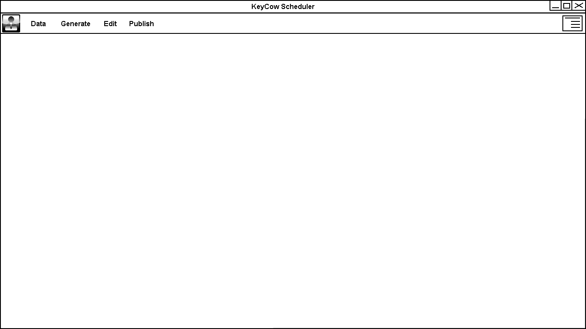

The administrator / scheduler interface consists of a navigation bar at the top of the screen containing a simple verb to represent each phase of creating a schedule. An options button on the right of the bar allows them to customize the UI in small ways.
The Data tab allows the scheduler to perform all tasks related to data collection, such as:
The Generate Tab presents a view for the automatic generation of schedules.
The Edit Tab presents a view for editing the generated schedule and resolving any conflicts that occur.
The Publish Tab presents a view for exporting the shedule to various file formats or Peoplesoft.